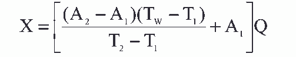

10.钾离子的测定
甲 火焰光度法
本方法适用于循环冷却水和天然水中钾离子的测定，其含量小于 10mg/L。
1．原理
火焰光度计是用火焰作激发光源，使物质受激后，发射出特征谱线，再利用干涉滤光片，
去除基体中杂散光的影响，被测物的特征谱线的光强度与其含量成正比。
当水样中钠：钾>5： 1；镁：钾>100： 1；钙：钾>10： 1 时，干扰测定。
2．试剂
2． 1 钾离子标准溶液的配制
称取 1.9070g 于 500～600℃灼烧至恒重的氯化钾，溶于水，移入 1000mL 容量瓶中，稀
释至刻度，此溶液 1mL 含 1mg 钾离子。
2．2 钾离子标准工作溶液的配制
分别吸取 1mL 含 1mg 钾离子标准溶液 2.0,4.0,6.0,8.0,10mL 于 5 只 1000 容量瓶中,用
水稀释至刻度,此溶液分别为 2,4,6,8,10mg/L 钾离子标准工作溶液,分别贮于塑料瓶内。
3．仪器
火焰光度计
4．分析步骤
4． 1 选择标准溶液浓度
对于已知钾离子近似浓度的水样，用插入法进行测定。选择两个钾离子标准工作溶液，
一个比水样中钾离子含量略低，一个略高。
4． 2 水样的测定（插入法）
4． 2． 1 接好电源，调节助燃气和燃气流量，确定最佳火焰高度，按仪器说明书进行
预热、调零等操作，使仪器达到测定条件。
4． 2． 2 把选好的两个端点标准溶液与水样同时测定发射光强度。
5．分析结果的计算
水样中钾离子含量 X（毫克/升）， 按下式计算：

式中： A1——下端点钾标准溶液浓度，毫克/升；
A2——上端点钾标准溶液浓度，毫克/升；
T1——下端点钾标准溶液发射光强度；
T2——上端点钾标准溶液发射光强度；
TW——水样发射光强度；
Q——测定前水样稀释倍数。
6．注释
6． 1 当钠、钙、镁浓度达到干扰浓度时，可在钾离子标准溶液中配制相应的干扰离
子含量。
6． 2 若测定钾离子的目的，在于确定循环冷却水浓缩倍数时，可将循环冷却水按运
行状况进行稀释，使其含盐量接近补充水状况，再进行测定，这样可相对消除干扰。
7．允许差
水样中钾离子含量在 2.24mg/L 时，平行测定两结果差不大于 0.14mg/L。
8．结果表示
取平行测定两结果算术平均值，作为水样的钾离子含量。
乙 火焰光度法
参见金属离子的测定：火焰原子吸收分光光度法。